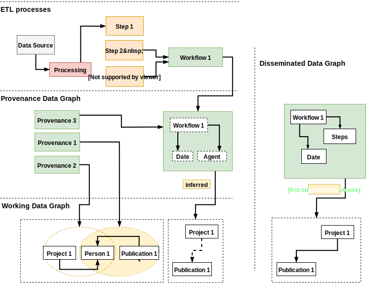

ATTX Ontology
Table of Contents
Ontology/Data Model - ATTXOnto
The full ontology description and examples are available at: https://attx-project.github.io/attx-onto/
The ontology/data model has the purpose of describing how and when the data flows within the platform, types of transformations (and associated workflows), the provenance information (agent and associated processes performed) and other meta data.
A general use case is represented in Figure 1 where we can depict several parts:
- ETL processes associated with the specific steps and workflows - see ETL Workflow for more details and UVProvovenance API which generates such specific information;
- Provenance Data Graph - which depicts provenance information specific to each workflow, data set etc.;
- Working Data Graph - contains both inferred and explicit relationships between domain data;
- Dissemination Data Graph - Data Graph distributed via the APIs.

Figure 1. Ontology Use Cases Flow
ATTX Graph Namespaces
Base namespaces and/or named graphs convention:
http://data.hulib.helsinki.fi/attx/onto#- ontology and associated classeshttp://data.hulib.helsinki.fi/attx- to be used as a base for datahttp://data.hulib.helsinki.fi/attx/prov- for provenance datahttp://data.hulib.helsinki.fi/attx/ids- for clusted data idshttp://data.hulib.helsinki.fi/attx/{workflowID}/work- for working datahttp://data.hulib.helsinki.fi/attx/work/{workflowID}/infra- for infrastructurehttp://data.hulib.helsinki.fi/attx/{workflowID}/{workflowID}/work/pub- for publication
http://data.hulib.helsinki.fi/attx/id- service whatever comes after the id should resolve the id
The Graph Manager API generates working datasets by following the http://data.hulib.helsinki.fi/attx/work{generatedID} where the generatedID is a result of hash algorithm. To be pointed out that the http://data.hulib.helsinki.fi/attx/work is the recommended base for the working datasets.
Example of provenance header in TURTLE format:
@prefix attx: <http://data.hulib.helsinki.fi/attx/> .
@prefix attxonto: <http://data.hulib.helsinki.fi/attx/onto#> .
@prefix dc: <http://purl.org/dc/elements/1.1/> .
@prefix dcterms: <http://purl.org/dc/terms/> .
@prefix prov: <http://www.w3.org/ns/prov#> .
@prefix pwo: <http://purl.org/spar/pwo/> .
@prefix rdf: <http://www.w3.org/1999/02/22-rdf-syntax-ns#> .
@prefix rdfs: <http://www.w3.org/2000/01/rdf-schema#> .
@prefix schema: <http://schema.org/> .
@prefix sd: <http://www.w3.org/ns/sparql-service-description#> .
@prefix xml: <http://www.w3.org/XML/1998/namespace> .
@prefix xsd: <http://www.w3.org/2001/XMLSchema#> .
Related Data Models
ATT Data Model
- http://iow.csc.fi/model/att "Application Profile for Research Data Catalogues"
The Data Model is focused on data interoperability of catalogues and research materials find-ability (e.g. research papers and other types of documents). And as its label states it is a "Application Profile for Research Data Catalogues" or has the purpose to aid in building such an application profile.
The main focus seems to be however on the DCTerms vocabulary with concepts such as: FileFormat, LinguisticSystem, LicenseDocument, Location, MediaType, PeriodOfTime, RightsStatement.
The ATT Ontology also builds on the PROV-O with concepts such as Activity, Entity and FOAF (Agent, Project, Document - interesting there is no use of PROV-O Agent - given that between them is the property prov:wasAssociatedWith, however considering the precise definition of a foaf:Agent rather than the broader prov:Agent it justifies the choice. At the same time the use of schema:SoftwareApplication could be introduced https://schema.org/SoftwareApplication) and SKOS: Concept, ConceptScheme and DCAT: CatalogRecord, Catalog, Dataset, Distribution. At the same time other utilised concepts are:
- Checksum from SPDX specification;
- Object Characteristics from PREMIS;
- Identifier in W3 ADMS;
- Variable in DISCO.
On another note the ATT Data Model intertwines Shape Constraints SHACL with constructs such as:
<http://iow.csc.fi/ns/att#DatasetChecksum>
a sh:Shape ;
rdfs:comment "A value that allows the contents of a file to be authenticated. This class allows the results of a variety of checksum and cryptographic message digest algorithms to be represented."@en , "Arvo joka mahdollistaa jakelun sisällön tarkistamisen"@fi ;
rdfs:isDefinedBy <http://iow.csc.fi/ns/att> ;
rdfs:label "Checksum"@en , "Tarkistussumma"@fi ;
dcterms:created "2016-05-17T13:26:21"^^xsd:dateTime ;
dcterms:identifier "urn:uuid:7950884d-3a5e-4498-be71-1e82cbf6e1dc" ;
dcterms:modified "2016-10-24T12:02:53.317+03:00"^^xsd:dateTime ;
owl:versionInfo "Unstable" ;
sh:property <urn:uuid:9baa0ec8-f994-443d-9793-595ebe498e18> , <urn:uuid:0d4bcc55-523f-4d08-a37c-0fdb8923d630> ;
sh:scopeClass <http://spdx.org/rdf/terms#Checksum> .
References
Reference ontologies:
- http://iow.csc.fi/model/att
- https://www.w3.org/TR/prov-o/
- https://www.w3.org/TR/vocab-org/
- https://www.w3.org/TR/void/
- http://www.opmw.org/model/OPMW/#
- http://www.sparontologies.net/ontologies/pwo/source.html
- http://vcvcomputing.com/provone/provone.html
- https://www.w3.org/ns/formats/ - Class URI for specific file formats
- http://purl.org/dc/terms/ - DC terms
Other models: